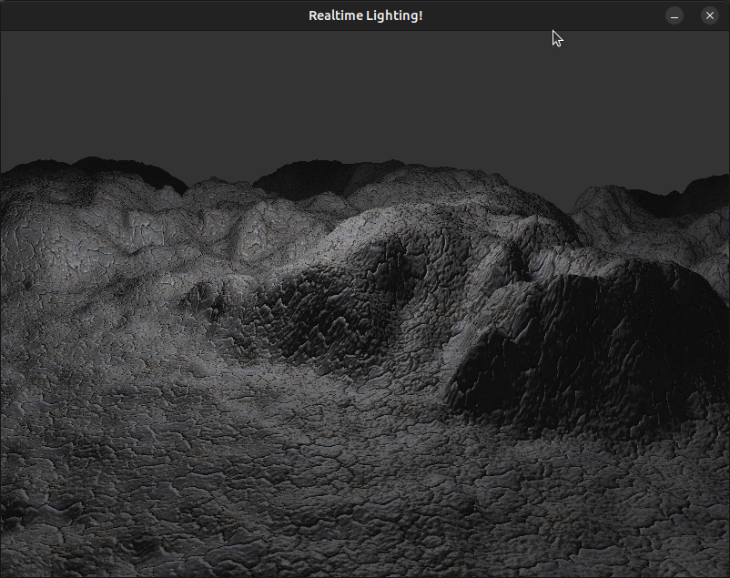

Implementation following "Newcastle's Graphics for Games" course but with Linux support, using SDL2 instead of the Windows API.
Source Code: https://bitbucket.org/williamblair/newcastlegraphicsforgames/src/master/
Finish "Your First Triangle". Replaced all WinAPI windowing code with SDL2 window/GL context code. Replaced min/max macros with std::min/std::max. Also had to add 'const' to the last argument of OGLRenderer::DebugCallback. Implemented the Mesh and Shader classes from the tutorial. TODO implement keyboard/mouse support.
Finish "The View Matrix". Added Keyboard, Mouse, and Camera classes. Keyboard and Mouse classes take a SDL_Event as Update input instead of Windows raw data. Also, instead of an array to hold key states, use an unordered_map to map the tutorial key/button enums to sdl keycodes:
enum KeyboardKeys
{
KEYBOARD_TAB = SDLK_TAB,
KEYBOARD_RETURN = SDLK_RETURN,
KEYBOARD_ESCAPE = SDLK_ESCAPE,
...
std::unordered_map<KeyboardKeys,bool> keyStates;
...
void Keyboard::Update(const SDL_Event& e)
{
if (!isAwake) {
return;
}
if (e.type == SDL_KEYDOWN) {
keyStates[KeyboardKeys(e.key.keysym.sym)] = true;
} else if (e.type == SDL_KEYUP) {
keyStates[KeyboardKeys(e.key.keysym.sym)] = false;
}
}
Finish "Texture Mapping". Replaced the SOIL library with stb_image as SOIL was segfaulting during texture load:
Thread 1 "main" received signal SIGSEGV, Segmentation fault. __strchr_avx2 () at ../sysdeps/x86_64/multiarch/strchr-avx2.S:67 67 ../sysdeps/x86_64/multiarch/strchr-avx2.S: No such file or directory. (gdb) bt #0 __strchr_avx2 () at ../sysdeps/x86_64/multiarch/strchr-avx2.S:67 #1 0x00007ffff74beb0e in __strstr_generic (haystack=, needle=0x7ffff7a11c18 "GL_ARB_texture_non_power_of_two") at ../string/strstr.c:84 #2 0x00007ffff7a0577d in query_NPOT_capability () from /lib/libSOIL.so.1 #3 0x00007ffff7a05b4d in SOIL_internal_create_OGL_texture () from /lib/libSOIL.so.1 #4 0x00007ffff7a07b30 in SOIL_load_OGL_texture () from /lib/libSOIL.so.1 #5 0x0000555555559fa4 in Renderer::Renderer (this=0x7fffffffdec0, parent=...) at src/Renderer.cpp:9 #6 0x000055555555990f in main () at src/main.cpp:10 (gdb)
Instead created function OGLRenderer::LoadGLTextureFromFile:
GLuint OGLRenderer::LoadGLTextureFromFile(const char* fileName)
{
GLuint texId = 0;
int width, height, numChannels;
unsigned char* data = stbi_load(fileName, &width, &height, &numChannels, 0);
if (!data) {
throw std::runtime_error("Failed to load texture: " + std::string(fileName));
}
glGenTextures(1, &texId);
glBindTexture(GL_TEXTURE_2D, texId);
glTexImage2D(
GL_TEXTURE_2D,
0,
numChannels == 3 ? GL_RGB : GL_RGBA,
width, height,
0,
numChannels == 3 ? GL_RGB : GL_RGBA,
GL_UNSIGNED_BYTE,
data
);
glGenerateMipmap(GL_TEXTURE_2D);
stbi_image_free(data);
glBindTexture(GL_TEXTURE_2D, 0);
return texId;
}
Finish 'Skeletal Animation'. TODO implement the game timer, right now 1000/60 milliseconds per time delta update is hard coded. Only implemented the CPU skinning from the PDF, TODO GPU skinning from the source code. Had to add the std:: prefix to some string variables/arguments.
Finish 'post processing'. Some typos in the tutorial PDFs: in Renderer.cpp, line 55:
// original
//if (glCheckFramebufferStatus(GL_FRAMEBUFFER) != GL_FRAMEBUFFER_COMPLETE || !sceneDepthTex || !sceneColourTex[0]) {
// fixed
if (glCheckFramebufferStatus(GL_FRAMEBUFFER) != GL_FRAMEBUFFER_COMPLETE || !bufferDepthTex || !bufferColourTex[0]) {And in processfrag.glsl, line 9:
in Vertex {
vec2 texCoord;
//vec4 colour; // commented out/removed
} IN;Finish 'Real Time Lighting'. Small typo in tutorial pdf in PerPixelFragment.glsl:
in Vertex
{
//vec3 colour; // original
vec4 colour; // fixed
vec2 texCoord;
vec3 normal;
vec3 worldPos;
} IN;
Finish 'Real Time Lighting B' bump mapping. Same small typo in fragment shader (BumpFragment.glsl) with the input colour data type vec4 instead of vec3.
Finish 'Cube Mapping'. In order to get the skybox to show up, had to add the following to DrawSkybox() in Renderer.cpp:
glUniform1i(glGetUniformLocation(currentShader->GetProgram(),"cubeTex"),2);
glActiveTexture(GL_TEXTURE2);
glBindTexture(GL_TEXTURE_CUBE_MAP, cubeMap);The cube texture was bound and texture uniform set in the DrawWater function but not this one, resulting in a black background. Also added the function LoadGLCubemapFromFile to OGLRenderer to use stb_image:
GLuint OGLRenderer::LoadGLCubemapFromFile(
const char* west,
const char* east,
const char* up,
const char* down,
const char* south,
const char* north,
bool flipVertically
)
{
stbi_set_flip_vertically_on_load(flipVertically);
GLuint axis[6] = {
GL_TEXTURE_CUBE_MAP_POSITIVE_X,
GL_TEXTURE_CUBE_MAP_NEGATIVE_X,
GL_TEXTURE_CUBE_MAP_POSITIVE_Y,
GL_TEXTURE_CUBE_MAP_NEGATIVE_Y,
GL_TEXTURE_CUBE_MAP_POSITIVE_Z,
GL_TEXTURE_CUBE_MAP_NEGATIVE_Z
};
const char* fileNames[6] = {
west,
east,
up,
down,
south,
north
};
GLuint skyBoxCubeMap;
glGenTextures(1, &skyBoxCubeMap);
glBindTexture(GL_TEXTURE_CUBE_MAP, skyBoxCubeMap);
for (int i=0; i<6; ++i) {
int width, height, numChannels;
unsigned char* data = stbi_load(fileNames[i], &width, &height, &numChannels, 0);
if (!data) {
throw std::runtime_error("Failed to load texture: " + std::string(fileNames[i]));
}
glTexImage2D(
axis[i],
0,
numChannels == 3 ? GL_RGB : GL_RGBA,
width, height,
0,
numChannels == 3 ? GL_RGB : GL_RGBA,
GL_UNSIGNED_BYTE,
data
);
stbi_image_free(data);
glTexParameteri(GL_TEXTURE_CUBE_MAP, GL_TEXTURE_MIN_FILTER, GL_LINEAR);
glTexParameteri(GL_TEXTURE_CUBE_MAP, GL_TEXTURE_MAG_FILTER, GL_NEAREST);
glTexParameteri(GL_TEXTURE_CUBE_MAP, GL_TEXTURE_WRAP_S, GL_CLAMP);
glTexParameteri(GL_TEXTURE_CUBE_MAP, GL_TEXTURE_WRAP_T, GL_CLAMP);
}
glBindTexture(GL_TEXTURE_CUBE_MAP, 0);
return skyBoxCubeMap;
}Finish 'Shadow Mapping'. Added biasMatrix to DrawShadowScene() as it was missing in the pdf code:
Matrix4 biasMatrix;
biasMatrix.ToIdentity();
biasMatrix.values[0] = 0.5f; // scale
biasMatrix.values[5] = 0.5f;
biasMatrix.values[10] = 0.5f;
biasMatrix.values[12] = 0.5f; // translation
biasMatrix.values[13] = 0.5f;
biasMatrix.values[14] = 0.5f;Started porting to the PS Vita using https://github.com/Rinnegatamante/vitaGL. I got the first triangle and skeletal animation examples working (without input control or the game timer).
Some changes that were required to get it running:
Sense you can't view stdout while running on the Vita, I also made a logging-to-file function for use during debugging:
void VitaLog(const char* fileName, const unsigned int line, const char* msg, ...)
{
FILE* fp = fopen("ux0:VPK/VitaLog.txt", "a");
if (fp) {
va_list args;
va_start(args, msg);
fprintf(fp, "%s:%u ", fileName, line);
vfprintf(fp, msg, args);
va_end(args);
fflush(fp);
fclose(fp);
}
}I also tried to use a macro to simplify calls to it but couldn't seem to get macro varargs to compile:
//#define VITALOG(msg, ...) VitaLog(__FILE__, __LINE__, msg, __VA_ARGS__)
#define VITALOG(msg) VitaLog(__FILE__, __LINE__, msg)